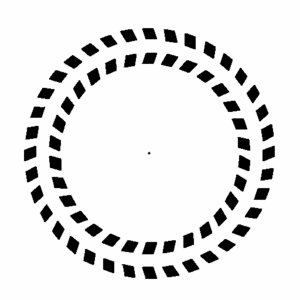
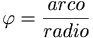
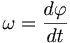

Movimiento circular uniforme
 De: La Frikipedia, la enciclopedia extremadamente seria.
De: La Frikipedia, la enciclopedia extremadamente seria.
 Esto no es MCU, esto es signo de que Vd. es un alcohólico

Circular por aquí SÍ es MCU
El movimiento circular uniforme es aquel movimiento circular en el que un móvil se desplaza alrededor de un punto central, siguiendo la trayectoria de una circunferencia, de tal modo que en tiempos iguales recorra espacios iguales.
Venga, ahora en serio. El MCU y sus fórmulas son usadas principalmente por los habitantes masculinos de Chueca y según nos informan fuentes de última hora, posiblemente también de Lorca (Verídico). El resto de usos son cotidianos, como por ejemplo, meterse a una rotonda por el lao corresto, darle a la ruleta de la lavadora, ver como da vueltas un CeDeRón, etc.
Usos en Chueca
Según un hombre muu sabeor de letras, el esquema funciona asín:
«Se hace un rosco de jays dándose muuu fueeeeltemente por sálvese la parte mientras uno de los homeoseesssuales da pitidos con una caracola gigante de mar, la cual indica que hay que cambiar de dirección»
~ ¿¿?? sobre el procedimiento a seguir
Se ha llegado a dar el caso de que hayan viviendo en la misma casa 3 gays y una mujer de tendencias sexuales indefinidas (totalmente verídico). No hay que ser Sherlock Holmes para saber que la mujer es la "directora" (la que toca la caracola que indica el cambio de sentido en el MCU)
Fórmulas del MCU
Desplazamiento Angular
- 
Esto significa que la letra esa chachi molonguis es el arco entre el radio. Pero no especifica si el arco tiene que llevar flecha, la flecha tiene que estar mojada en cianuro, si el arco no lleva cuerda (o soga)... En definitiva, la letra esa "Phi" (posiblemente de Philadelphia©, una marca-plagio de Tulipán™) nos indica que el Cerdaco este nos ha spameado la puñetera fórmula.
Velocidad Angular

Fórmula simplificada, pinchar sobre la imagen para ampliar
- 
Dícese de la velocidad que puede alcanzar una angula en el momento en el que está siendo devorada por un payaso sifilítico en paro. (Pero, ¡¿Quién cojones ha puesto esto?!)
Bueno, analicemos la fórmula esa que sale ahí arriba...
La "W" puede significar diferentes cosas, como Wartortle, Wario, Waluigi, Wargreymon, Wargarurumon, laWarratumadre, o incluso volksWagen. En cualquier caso, el Cerdaco de los cojones nos ha endosado publicidad en esta fórmula otra vez, de Noentiendo, de
Digaymon o de Una conocida marca de juguetes sexuales para parejas homosexuales (¡¡Toma rima!!).
Úsese la fórmula simplificada del margen para calcular la Velocidad Angular.
Aplicaciones de las Fórmulas del MCU
- Saber a qué velocidad debemos ir para que el Rosco de Chueca sea uniforme.
- Saber a qué velocidad debemos ir alrededor del tronco de un almendro si queremos darnos nosotros mismos por el culo.
- Saber a qué velocidad debemos ir alrededor del tronco de un castaño si queremos darnos nosotros mismos por el culo.
- Saber a qué velocidad debemos ir alrededor del tronco de un abeto si queremos darnos nosotros mismos por el culo.
- Saber a qué velocidad debemos ir alrededor del tronco de un álamo si queremos darnos nosotros mismos por el culo.
- Saber a qué velocidad debemos ir alrededor del tronco de un naranjo si queremos darnos nosotros mismos por el culo.
- Saber a qué velocidad debemos ir alrededor del tronco de un limonero si queremos darnos nosotros mismos por el culo.
- Saber a qué velocidad debemos ir alrededor del tronco de un tilo si queremos darnos nosotros mismos por el culo.
- Saber a qué velocidad debemos ir alrededor del tronco de un cerezo si queremos darnos nosotros mismos por el culo.
- Saber a qué velocidad debemos ir alrededor del tronco de un ciprés si queremos darnos nosotros mismos por el culo.
- Saber a qué velocidad debemos ir alrededor del tronco de un olmo si queremos darnos nosotros mismos por el culo.
- Saber a qué velocidad debemos ir alrededor del tronco de un olivo si queremos darnos nosotros mismos por el culo.
- Saber a qué velocidad debemos ir alrededor del tronco de un tejo si queremos darnos nosotros mismos por el culo.
- Saber a qué velocidad debemos ir alrededor del tronco de un avellano si queremos darnos nosotros mismos por el culo.
- Saber a qué velocidad debemos ir alrededor del tronco de un alcornoque si queremos darnos nosotros mismos por el culo.
- Saber a qué velocidad debemos ir alrededor del tronco de una higuera si queremos darnos nosotros mismos por el culo.
- Saber a qué velocidad debemos ir alrededor del tronco de un algarrobo si queremos darnos nosotros mismos por el culo.
- Saber a qué velocidad debemos ir alrededor del tronco de un roble si queremos darnos nosotros mismos por el culo.
- Saber a qué velocidad debemos ir alrededor del tronco de una parra si queremos darnos nosotros mismos por el culo.
- Saber a qué velocidad debemos ir alrededor del tronco de un albercoquero si queremos darnos nosotros mismos por el culo.
- Saber a qué velocidad debemos ir alrededor del tronco de un pino si queremos darnos nosotros mismos por el culo.
- Saber a qué velocidad debemos ir alrededor del tronco de un sauce si queremos darnos nosotros mismos por el culo.
- Saber a qué velocidad debemos ir alrededor del tronco de un haya si queremos darnos nosotros mismos por el culo.
- Saber a qué velocidad debemos ir alrededor del tronco de un nogal si queremos darnos nosotros mismos por el culo.
- Saber a qué velocidad debemos ir alrededor del tronco de una carrasca si queremos darnos nosotros mismos por el culo.
- Saber a qué velocidad debemos ir alrededor del tronco de un manzano si queremos darnos nosotros mismos por el culo.
- Saber a qué velocidad debemos ir alrededor del tronco de un poste eléctrico si queremos darnos nosotros mismos por el culo.
- Saber a qué velocidad debemos ir alrededor del fuste de una columna de mármol si queremos darnos nosotros mismos por el culo.
- Saber a qué velocidad debemos ir alrededor del LHC si queremos darnos nosotros mismos por el culo.
- Saber a qué velocidad debemos ir alrededor de tu novia para cortar con ella (es decir... para darte por el culo).
- Saber a qué velocidad debe ir Link alrededor del tronco de un Árbol Deku si quiere darse él mismo por el culo. (Extraído del Manual del juego de Noentiendo "The Legend of Zerda: A Link to the Pr0n".
- Saber a qué velocidad debe ir el planeta Tierra alrededor del Sol si quiere darse él mismo por el culo.
- Saber pa´ qué lao tenemos que tirar al meternos en una rotonda.
FAQ del MCU
Estamoooooos trabajandooou en ellouuu
All Your Face Are Belong To Us MUAHAHAHAHAHA!!!
- ¿Si soy una tía, qué ocurre si intento hacer el MCU alrededor de cualquiera de los elementos citados anteriormente?
- Pues, que producirías una paradoja espacio-temporal que destruiría el multiverso, el negativerso y el verso octosílabo. Y, por tonta, te violaría y asesinaría Leonardo Dantés (y no necesariamente en ese orden...)
- ¿Es el PPM compatible con el MCU?
- Nuestros expertos están trabajandoooou en ellouuuu.
- ¿Qué ocurre si soy un tío, pero hago el MCU corriendo hacia atrás?
- El orden de los factores no altera el producto, simplemente, recuerda poner un signo "-" al principio de las ecuaciones, para calcular la velocidad a la que tienes que ir para autoencularte.
- ¿Si soy hermafrodita, puedo hacer el MCU?
- Nuestros científicos aún no tienen pulido el tema del todo, vea la respuesta al punto 2.
- ¿Puede mi perro hacer el MCU?
- En teoría. Pero no lo puede hacer alrededor de ninguno de los elementos citados anteriormente. Lo hace sobre sí mismo para lamerse el culo.
- ¿Y mi madre puede hacer el MCU?
- Si es una perra, sí. Si no, lee el punto 1.
- TA-RI-RO-RI-RO-RIIIIIIIIII (léase con tonillo de Expediente X).
- ¿Podemos yo, tú y él hacer el MCU?
- Depende del sexo (ver punto 1).
- ¿Y si un día me pierdo por Madrid y llego sin querer a Chueca?
- En ese caso, muévete en plan Solid Snake (espalda pegada a la pared), por si acaso.
- ¿Y si alguien que viaja al pasado y preña a su abuela lo hace?
- Entonces se daría por el culo a si mismo y a su abuelo (es decir, él).
¿Sabías qué...
- Los de Cálico Electrónico, en el primer capítulo de la tercera temporada, en las tomas falsas, Muzamán hace un chiste que plagia las enseñanzas de éste artículo? (Enlace a la infamia)
- Existen diferentes tipos de mcu? Existe el mcua (movimiento circular uniformemente acelerado) y mcud (movimiento circular uniformemente desacelerado) y juntos hacen el mcuad o mcuda (movimiento circular uniformemente desacelerado acelerado o movimiento circular uniformemente acelerado desacelerado).
- Es posible escribir MCU en otros idiomas ?
- MCU son las siglas de "Ministerio de Cultura" y escrito al reves es UCM "Universidad Complutense de Madrid" y dándole muchas vueltas a lo mismo acaban dándose por culo?
 Sexo Sexo
|
|
|
Autor(es):
- Krusher
- Nexo
- Doctor grijander
- MURO DE AGUAS
- Max Slug
- Frikiman
- Aque
- Epikurolibre
- Injury
- NRikee
Frikipedia 2005-2016, Licencia
GFDL 1.2 - Extraído por FrikiLeaks